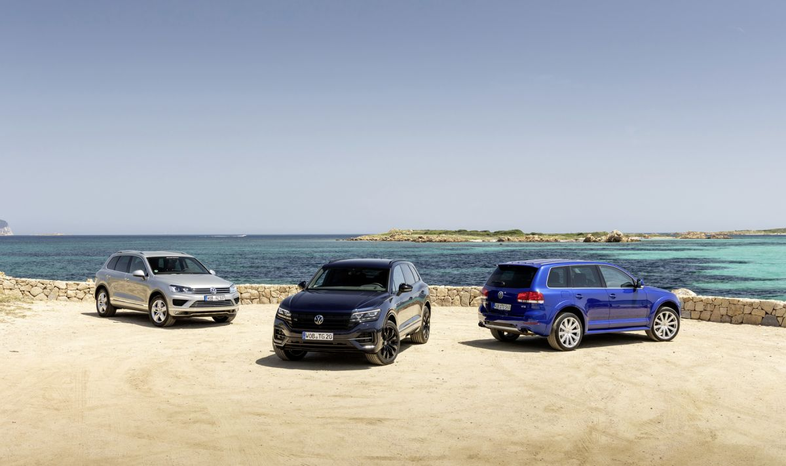

20 годишната еволюция на Volkswagen Touareg 
Когато беше представен за първи път през 2002 г., Touareg изненада с 5,0-литров V10 TDI двигател, който доставяше впечатляващия тогава въртящ момент от 750 Nm. „Race Touareg“ от Volkswagen Motorsport доминираше в рали Дакар в продължение на три последователни години от 2009 до 2011 г. Следваха различни световни рекорди на дълги разстояния, като например на Панамериканската магистрала, където разстоянието от до 23 000 километра беше изминато за малко по-малко дванадесет дни. През 2006 г. Touareg извади от хангара си Boeing 747 с тегло 155 тона и по този начин си осигури нов световен рекорд. През 2005 г. Touareg “Stanley”, един от първите наистина интелигентни превозни средства в автомобилната история, спечели голямото предизвикателство на DARPA за автономни превозни средства, организирано от Американската агенция за напреднали изследователски проекти в областта на отбраната (American Defense Advanced Research Projects Agency). Това беше един от само четирите автомобила, които достигнаха финалната линия, от общо 23, които започнаха състезанието. Днес клиентите на Volkswagen се възползват от дългогодишен опит в разработката на системи като Travel Assist и опционалния Park Assist Plus с възможност за дистанционно паркиране.
Първият Touareg през 2002 г. отбеляза навлизането в нов сегмент и беше елегантен технологичен носител от самото начало. Обозначението на модела на първокласния SUV е препратка към народа на берберските туареги, номадските обитатели на дивите пейзажи на пустинята Сахара, и подчертава ясно изразената офроуд пригодност на автомобила. Благодарение на многобройните си иновации, като електромеханична стабилизация против преобръщане или CDC въздушно окачване с шест нива на настройки, Touareg се превърна в един от най-ценените SUV модели в своя клас веднага след пускането на пазара. С това оборудване преминаването на реки с дълбочина до 58 сантиметра и изкачването на наклони до 45 градуса не беше никакъв проблем. Водещият модел на линията Touareg беше Touareg V10 TDI, който беше оборудван с най-мощния дизелов двигател, инсталиран във Volkswagen по това време. 230 кВт (313 к.с.) 5-литров десетцилиндров двигател генерираше удивителен максимален въртящ момент от 750 Нм и ускоряваше 2,5-тонния Touareg до 100 км/ч за 7,8 секунди; максималната скорост беше 225 км/ч. Благодарение на този топ модел марката Volkswagen днес се превърна в един от водещите световни доставчици с пълна гама, покриваща всички важни сегменти от малки автомобили до SUV от висок клас. Touareg I се произвеждаше от 2002 до 2009 г. и е един от най-успешните луксозни SUV на своето време с 450 000 продадени бройки.
Второто поколение на Touareg нарасна както по ширина, така и по дължина и по този начин подчерта лукса и комфорт си. Предната част на автомобила подчерташе спортната елегантност с нови, аеродинамични брони и нова радиаторна решетка. Първият хибриден автомобил от Volkswagen беше пуснат на пазара, за да съвпадне с навлизането на пазара на второто поколение. Volkswagen Touareg 3.0 V6 TSI Hybrid се задвижваше едновременно от бензинов двигател V6 с компресор с 245 кВт (333 к.с.) и електрически двигател с мощност 34,3 кВт (46 к.с.). Електрическият двигател на изцяло хибридния модел рекуперираше енергията по време на спиране и така захранваше акумулатора. Хибридът имаше комбинирана системна мощност от 279 квТ (380 к.с.) и максимален въртящ момент от 580 Нм. Това позволяваше на Touareg II да ускорява до 100 км/ч за 6,5 секунди и правеше възможно достигането на максимална скорост от 240 км/ч. Средният му разход на гориво бе 8,2 литра бензин-супер на 100 километра. Множество нови асистиращи системи вече направиха пътуванията още по-безопасни и по-удобни, дори и по труден терен. В производствения си период от 2010 до 2018 г. Volkswagen продаде повече от 479 000 бройки от Touareg II.